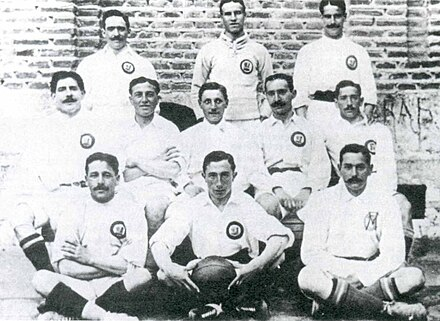
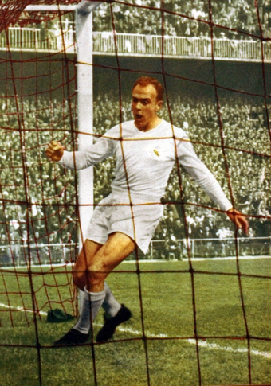
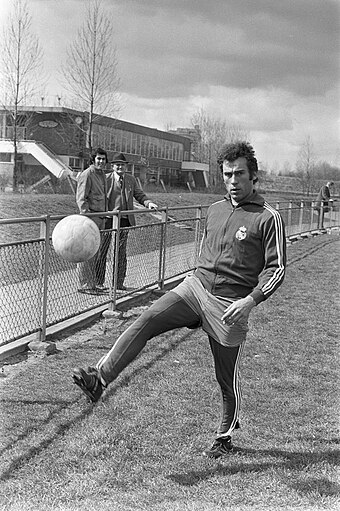

Real Madrid Club de Futbol
commonly referred to as Real Madrid , is a football club based in Madrid, Spain. The club competes in La Liga, the top tier of Spanish football.
Founded in 1902 as Madrid Football Club, the club has traditionally worn a white home kit. The honorific title real is Spanish for "royal" and was given by King Alfonso XIII in 1920, as well as the crown being added to the club crest. Real Madrid have played their home matches in the 85,000-capacity Santiago Bernabéu Stadium in Madrid since 1947. Unlike most European football clubs, Real Madrid's members (socios) have owned and operated the club throughout its history. Its anthem is the "Hala Madrid y nada más". The club is one of the most widely supported in the world, is the most followed football club on social media, and was estimated to be worth $6.6 billion in 2024, making it the world's most valuable football club. In 2024, Madrid became the first football club to make €1 billion ($1.1bn) in revenue.
In domestic football, the club have won 71 trophies: a record 36 La Liga titles, 20 copa del rey, 13 Super Copa de España, a Copa Eva Duarte, and a Copa de la Liga. In international football, Real Madrid have won a record 34 trophies: a record 15 European Cup/UEFA Champions League titles, a record six UEFA Super Cups, two UEFA Cups, a joint record two Latin Cups, a record one Iberoamerican Cup, and a record eight FIFA Club World championships. Real Madrid was ranked first in the International Federation of Football History and Statistics Club World Ranking for 2000, 2002, 2014, 2017.[18] In UEFA, Madrid ranks first in the all-time club ranking.
Madrid is one of the three La Liga clubs alongside Barcelona and Athletic Bilbao that have never been relegated from the top division since its inception in 1929. Real Madrid have many long-standing rivalries, most notably the El Clásico with Barcelona and El Derbi Madrileño with Atlético Madrid. The club established itself as a major force in Spanish and European football during the 1950s and 60s, winning five consecutive and a total six European Cups as well as two reaching two finals. This success was replicated domestically, with Madrid winning 12 league titles in 16 years. This team, which included Alfredo Di Stéfano, Ferenc Puskás, Paco Gento, and Raymond Kopa is considered by many to be the greatest of all time.Real Madrid is known for its Galácticos policy, which involves signing the world's best players, such as Ronaldo, Zinedine Zidane and David Beckham to create a superstar team. The policy generally refers to the two eras of Florentino Pérez's presidency (2000–06 and 2009–18); however, some players before his tenure are considered to be Galácticos, such as Steve McManaman. In June 2009, Madrid signed Cristiano Ronaldo for a record-breaking £80 million (€94 million); he became the all-time top goalscorer for the club and in football.Madrid have recently relaxed the Galácticos policy, instead focusing on signing young talents such as Vinícius Júnior, Rodrygo, Jude Bellingham, and Kylian Mbappé
Real Madrid are recognised as the greatest football club of the 20th century by FIFA and as the best European club during the same timeframe by the IFFHS. They also received the FIFA Centennial Order of Merit in 2004. Real Madrid have the highest participations in the European Cup/Champions League (42), in which they hold the records for the most wins and the most goals scored. Real Madrid is the only club to have won three consecutive titles (three-peat) in the European Cup/Champions League twice, the first time in 1955–56, 1956–57, and 1957–58, and the second time in 2015–16, 2016–17 and 2017–18. In June 2024, they won a record-extending 15th Champions League title (the fifth title in nine seasons), recognised as such by Guinness World Records. Real Madrid is the first club across all of Europe's top-five leagues to win 100 trophies in all competitions. As of July 2024, Real Madrid are ranked 2nd in the UEFA club rankings and ranked first in the last decade (2013–2023)
History
Early years (1902–1943)

Real Madrid's origins go back to when football was introduced to Madrid by the academics and students of the Institución Libre de EnseñanzaInstitución Libre de Enseñanza, which included several Cambridge and Oxford University graduates.[40] They founded (Sociedad) Sky Football in 1897, commonly known as La Sociedad (The Society) as it was the only one based in Madrid, playing on Sunday mornings at Moncloa.
In 1900, conflict between members caused some of them to leave and create a new club, Nueva Sociedad de Football (New Society of Football), to distinguish themselves from Sky Football. Among the dissenters were Julián Palacios, recognized as the first Real Madrid president, Juan Padrós and Carlos Padrós, the latter two being brothers and future presidents of Real Madrid. In 1901, this new club was renamed as Madrid Football Club. Later, following a restructuring in 1902, Sky was renamed as "New Foot-Ball Club".
6 March 1902, after a new Board presided by Juan Padrós had been elected, Madrid Football Club was officially founded. The Padrós brothers summoned other football enthusiasts to a meeting in the back room of Al Capricho, the family business. They viewed football as a mass sport that should be accessible to representatives of all social classes, and thought the new club should embody that idea. The brothers proposed the name, Madrid Football Club, which was unanimously accepted. The membership fee was also set, two pesetas a month, and the color of the shirt was chosen to be white in honour of a famous English team Corinthian, which Juan Padrós had met on one of his trips.>

Three years after its founding, in 1905, Madrid FC won its first title after defeating Athletic Bilbao in the Spanish Cup final. The club became one of the founding sides of the Royal Spanish Football Federation on 4 January 1909, when club president Adolfo Meléndez signed the foundation agreement of the Spanish FA. After moving between several grounds, the team relocated to the Campo de O'Donnell in 1912. In 1920, the club's name was changed to Real Madrid after King Alfonso XIII granted the title of Real (Royal) to the club.
In 1929, the first Spanish Football league was founded. Real Madrid led the first league season until the last match, a loss to Athletic Bilbao, meant they finished runners-up to Barcelona. Real Madrid won its first league title in the 1931–32 season and retained it the following year.
Santiago Bernabéu and unprecedented success (1943–1978)
Santiago Bernabéu became president of Real Madrid in 1943. Under his presidency, the club was rebuilt after the Civil War, and he oversaw the construction of the club's current stadium, Estadio Real Madrid Club de Fútbol (now known as the Santiago Bernabéu), and its training facilities Ciudad Deportiva. Additionally, during the 1950s former Real Madrid Amateurs player Miguel Malbo founded Real Madrid's youth academy, or "cantera," known today as La Fábrica. Beginning in 1953, he embarked upon a strategy of signing world-class players from abroad, the most prominent being Alfredo Di Stéfano.
n 1955, acting upon the idea proposed by Gabriel Hanot, a French sports journalist and editor of L'Équipe, Bernabéu, Ernest Bedrignan (deputy chairman of the Ligue de Football Professionnel)and Gusztáv Sebes created the European Cup, a continental tournament for the league champions around Europe, which is today known as the UEFA Champions League. It was under Bernabéu's guidance that Real Madrid established itself as a major force in both Spanish and European football. The club won the European Cup five times in a row between 1956 and 1960, which included the 7–3 Hampden Park final against Eintracht Frankfurt in 1960. After these five consecutive successes, Real was permanently awarded the original cup and earned the right to wear the UEFA badge of honour. Real Madrid's achievements in Europe were built upon its unprecedented domestic dominance, with the club winning twelve league titles out of sixteen possible from 1953–54 to 1968–69, including a five-in-a-row sequence in 1961–65, and finishing runners-up a further three times.
The club won the European Cup for a sixth time in 1966, defeating Partizan Belgrade 2–1 in the final with a team composed entirely of same nationality players, a first in the competition.[63] This team became known as the Yé-yé. The name "Yé-yé" came from the "Yeah, yeah, yeah" chorus in The Beatles' song "She Loves You" after four members of the team posed for Marca and impersonated the Beatles.[64] The Yé-yé generation was also European Cup runners-up in 1962[65] and 1964.[63] In the 1970s, Real Madrid won six league championships and three Spanish Cups.[66] The club competed in its first European Cup Winners' Cup in 1970–71 and progressed all the way to the final, where it lost to English side Chelsea 2–1 in a replay.[67] On 2 July 1978, club president Santiago Bernabéu died while the World Cup was being played in Argentina. FIFA decreed three days of mourning to honour him during the tournament.[68] The following year, the club organized the first edition of the Trofeo Santiago Bernabéu in memory of its former president.
Bernabéu had been Real Madrid's president for almost 35 years, during which his club won one Intercontinental Cup, six European Cups, 16 league titles, six Spanish Cups, two Latin Cups and one Copa Eva Duarte.
REAL MADRID CLUB DE FUTBOL
Avenida de Concha Espina
nº 1, Madrid, 28036, Spain
PHONE NUMBER +34 913 984 300